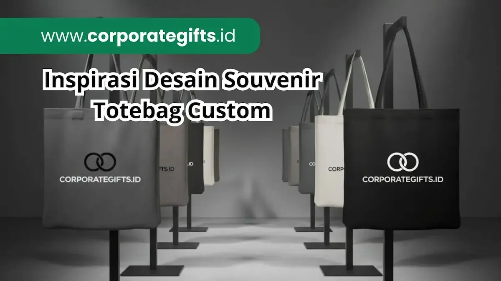

Corporate Gifts ID - Inspirasi desain souvenir totebag custom perusahaan terbaik memadukan tipografi minimalis, warna brand yang konsisten, dan elemen fungsional seperti QR code atau tagline kampanye pada bahan kanvas atau blacu. Pendekatan rancang bangun ini memastikan logo mudah dikenali dan tas jinjing sering dipakai ulang oleh penerima jauh setelah acara perusahaan selesai.
Poin Kunci Desain Totebag Custom Korporat:
- Keterbacaan Optimal: Mengutamakan kejelasan logo dan tipografi dari jarak pandang jauh tanpa visual yang terlalu padat.
- Tren Estetika Bersih: Tipografi minimalis dan ilustrasi line art menjadi dua gaya paling relevan untuk citra profesional.
- Konsistensi Identitas: Mengaplikasikan palet warna resmi perusahaan agar selaras dengan materi promosi lainnya.
- Jembatan Interaksi Digital: Pemanfaatan QR code mengubah cinderamata fisik menjadi media penghubung ke website korporat.
- Retensi Penggunaan Tinggi: Desain yang relevan dengan aktivitas harian membuat penerima bangga menggunakannya ke kantor maupun ruang publik.
Totebag bukan lagi sekadar tas kain sederhana pelengkap acara. Kini, tas jinjing custom telah bertransformasi menjadi salah satu pilihan souvenir kekinian yang tidak hanya fungsional, tetapi juga mampu mengomunikasikan identitas serta visi korporasi secara elegan di ruang publik.
Mengapa Desain Totebag Menentukan Efektivitas Branding?
Desain totebag menentukan seberapa lama dan seberapa sering brand perusahaan Anda terlihat di ruang publik. Totebag yang dirancang secara menarik dan estetis tidak akan berakhir di lemari penyimpanan, melainkan terus dipakai aktif oleh penerimanya.
Tas jinjing ini berfungsi seperti media iklan luar ruang bergerak yang menyertai aktivitas pemiliknya, mulai dari lingkungan perkantoran, pusat perbelanjaan, kafe, hingga perjalanan dinas luar kota. Semakin nyaman dan selaras desainnya dengan gaya busana harian, semakin tinggi frekuensi pemaparan merek Anda secara organik tanpa perlu biaya promosi berulang.
Tren Desain Totebag Custom untuk Kebutuhan Korporat
Tren desain totebag korporat modern mengarah pada tampilan yang lebih bersih, fungsional, dan mudah disesuaikan dengan beragam jenis acara. Berikut empat arah desain yang paling banyak diminati oleh institusi terkemuka:
1. Tipografi Minimalis dan Tagline Singkat
Desain berbasis tipografi menonjolkan satu pesan singkat, seperti tagline kampanye korporat atau nama perusahaan, dengan font sans-serif modern yang rapi. Gaya ini sangat pas bagi perusahaan yang menginginkan impresi profesional tanpa kesan ramai.
2. Ilustrasi Line Art untuk Kesan Modern
Ilustrasi garis tipis (line art) menghadirkan nuansa artistik yang kekinian. Cocok untuk menggambarkan ikon gedung kantor, proses kerja tim, atau siluet produk inti perusahaan dengan cara yang sangat estetis.
3. Kombinasi Warna Brand yang Konsisten
Mempertahankan palet warna utama brand pada sablon totebag menjaga keutuhan identitas visual korporat. Konsistensi ini sangat berharga ketika totebag dibagikan bersamaan dengan seragam tim atau perlengkapan paket seminar kit lainnya.
4. Elemen Fungsional: QR Code dan Website
Menyematkan barcode QR code berukuran proporsional pada sudut totebag menciptakan interaksi cepat antara produk fisik dengan halaman arahan (landing page), dokumen tahunan, atau katalog digital perusahaan.

Detail variasi desain sablon totebag minimalis dengan elemen tipografi dan tata letak modern.
15 Inspirasi Desain Souvenir Totebag Custom Perusahaan
Berikut 15 ide konsep desain kreatif yang dapat Anda adopsi sesuai dengan karakteristik audiens dan tema acara:
- Logo Tunggal Tone-on-Tone: Logo dicetak satu warna senada dengan bahan dasar kain untuk menghadirkan kesan mewah, bersahaja, dan tidak mencolok.
- Tagline Kampanye Berukuran Besar: Satu baris kalimat inspiratif dengan tipografi tebal yang mudah dibaca dari jarak 3 sampai 5 meter.
- Ilustrasi Line Art Layanan Bisnis: Garis sketsa modern yang mengabstraksikan bidang usaha atau ekosistem operasional perusahaan.
- Pola Repeat Monogram Brand: Pola berulang dari inisial logo menyerupai monogram tas premium untuk daya tarik visual yang khas.
- QR Code Menuju Portal Digital: Akses instan bagi audiens ke profil perusahaan, formulir rekrutmen, atau portofolio produk.
- Desain Dua Sisi Kontras: Sisi depan memuat logo identitas korporat, sedangkan sisi belakang menampilkan pesan kampanye atau karya seni tematik.
- Tema Acara dan Penanda Tanggal: Sangat ideal untuk seminar tahunan atau konferensi internasional sebagai cinderamata kenang-kenangan.
- Personalisasi Nama Peserta: Sablon inisial atau nama peserta membuat tas terasa eksklusif dan mencegah tas tertukar saat acara.
- Color Block Warna Korporat: Kombinasi bidang warna tegas yang mewakili gradasi warna resmi pedoman merek perusahaan.
- Ilustrasi Skyline Kota Tuan Rumah: Menampilkan siluet landmark kota tempat acara diselenggarakan untuk memperkuat nilai historis event.
- Tipografi Nilai Budaya Kerja (Core Values): Rangkaian kata nilai filosofis perusahaan yang ditata menjadi seni tipografi dekoratif.
- Earth Tone Sablon Ramah Lingkungan: Paduan kain kanvas mentah (greige) dengan tinta sablon ramah lingkungan bernuansa natural.
- Ikon Program Keberlanjutan (ESG / CSR): Visualisasi komitmen kepedulian sosial dan lingkungan perusahaan kepada komunitas luas.
- Karakter Maskot Korporat: Maskot perusahaan yang ekspresif untuk mencairkan suasana pada acara family gathering atau employee onboarding.
- Co-Branding Dua Logo: Penempatan dua logo berdampingan secara proporsional untuk mengabadikan momen kemitraan strategis antarperusahaan.
Desain Totebag Berdasarkan Jenis Acara Perusahaan
Kesesuaian konsep desain dengan profil audiens pada acara tertentu sangat krusial:
- Seminar dan Workshop Profesional: Utamakan desain yang informatif, memuat tema kegiatan, serta memiliki kantong bagian dalam untuk memudahkan penyimpanan pulpen atau gawai.
- Gathering dan Employee Engagement: Gunakan grafis yang ceria, santai, dan menonjolkan kebersamaan agar karyawan bangga menggunakannya saat akhir pekan.
- Kunjungan Klien dan Event Kemitraan: Wajib menerapkan desain formal minimalis dengan material kanvas tebal guna menjaga citra prestisius di mata mitra bisnis.
Pilihan Bahan dan Karakteristik Visual Totebag
Material kain yang digunakan sangat memengaruhi ketajaman warna dan daya tahan hasil cetak grafis:
| Jenis Bahan | Karakteristik Visual & Tekstur | Rekomendasi Teknik Cetak |
|---|---|---|
| Kanvas Premium | Serat kain tebal, rapat, dan kokoh; hasil cetak warna sangat tajam dan tahan lama | Sablon manual berkualitas, DTF, atau DTG printing full color |
| Blacu Natural | Warna krem alami dengan bintik kapas natural; sangat cocok untuk gaya vintage dan eco-friendly | Sablon pasta rubber 1-2 warna kontras |
| Spunbond Non-Woven | Permukaan sintetis halus dan ringan; cocok untuk kebutuhan goodie bag massal ekonomis | Sablon sabun atau presisi 1 warna |
Cara Menyesuaikan Desain dengan Identitas Brand
Untuk memastikan hasil akhir sesuai dengan standar pedoman visual perusahaan, lakukan langkah-langkah berikut:
- Sediakan Berkas Format Vektor: Gunakan file logo dalam format .AI, .EPS, atau .PDF vektor agar garis desain tidak pecah saat diperbesar ke skala cetak tas.
- Pilih Maksimal Dua Titik Fokus: Batasi jumlah elemen visual agar tas tidak terlihat seperti papan reklame yang berjejal.
- Uji Kontras Warna Tinta dan Kain: Pastikan warna tinta sablon memiliki tingkat keterbacaan yang kuat terhadap latar belakang warna kain totebag.
- Minta Sampel Digital (Mockup 3D): Ajukan pratinjau mockup kepada tim Corporate Gifts ID untuk mengonfirmasi posisi proporsional logo sebelum masuk jalur cetak massal.
Kesimpulan
Desain totebag custom yang matang mampu mengubah benda cinderamata sederhana menjadi sarana promosi berjalan yang terus memperluas jangkauan merek Anda. Paduan material berkualitas, teknik tipografi yang elegan, dan visual yang fungsional adalah kunci investasi promosi cerdas untuk setiap event korporat.
Konsultasikan rancangan desain totebag impian Anda bersama tim spesialis kami dan jelajahi opsi terbaik lainnya di katalog souvenir perusahaan kami.
FAQ: Pertanyaan Seputar Desain Totebag

Ditulis oleh: Arinda Zakia
Senior Corporate Gifting SpecialistSpesialis kurasi paket seminar kit, merchandise tekstil berstandar ramah lingkungan, dan strategi visual branding di CorporateGifts.ID dengan pengalaman lebih dari 7 tahun.
Lihat Profil Lengkap & Panduan Lainnya